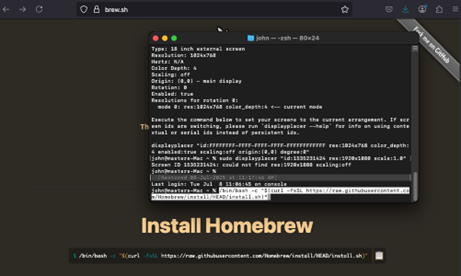
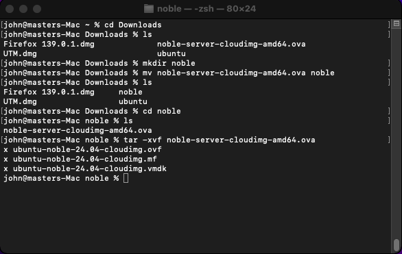
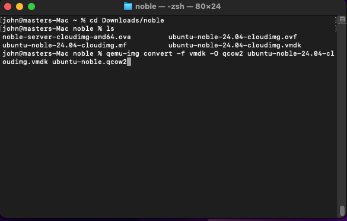
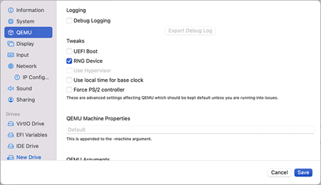
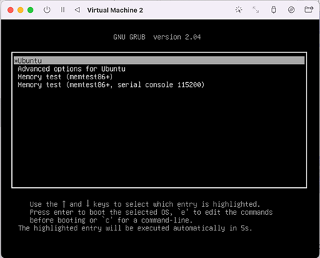

✅ Step 1: Download & Install UTM
- Visit the official UTM website: https://mac.getutm.app
- Download the UTM app.
- Install UTM by dragging it to your Applications folder.
✅ Step 2: Download the OVA File
- Download the .ova file you want to convert to .qcow2.
- It will typically be saved in your Downloads folder.
✅ Step 3: Install Homebrew
- Open https://brew.sh
- Run in Terminal:
/bin/bash -c "$(curl -fsSL https://raw.githubusercontent.com/Homebrew/install/HEAD/install.sh)"
⚠️ If brew is not found after installation, run:
echo 'eval "$(/opt/homebrew/bin/brew shellenv)"' >> /Users/your_username/.zprofile
eval "$(/opt/homebrew/bin/brew shellenv)"

✅ Step 4: Install QEMU via Homebrew
brew install qemu

✅ Step 5: Extract and Convert OVA to QCOW2
cd ~/Downloads
mkdir noble
mv your_file.ova noble/
cd noble
tar -xvf your_file.ova

qemu-img convert -f vmdk -O qcow2 ubuntu-noble-24.04-cloudimg.vmdk ubuntu-noble.qcow2
📝 Replace file names to match yours. Keep naming consistent across commands.
✅ Step 6: Clean Up (Optional)
- Delete the original .ova and .vmdk/.vdi files
- ✅ Keep the .qcow2 file
✅ Step 7: Import QCOW2 into UTM
- Open the UTM app.
- Click the + button in the top-left corner.
- Choose Emulate.
- Select Other.
- Check Skip ISO Boot, then click Next.
- Set your CPU, memory, and storage options.
- Name your VM and click Save.
8. Right-click your VM and choose Edit.
9. Under System, uncheck UEFI Boot.
💡 Some systems may require UEFI enabled — test if needed.
✅ Step 8: Add the QCOW2 Disk
- In VM settings, click New Drive.
- Choose Interface: IDE
- Select Import Drive Image
- Pick your .qcow2 file and click Open
- Drag the IDE drive to the top of the list
- Click Save
⚠️ IDE Drive must be listed first to boot successfully.
✅ Step 9: Start the Virtual Machine
Click Start to launch your VM.
